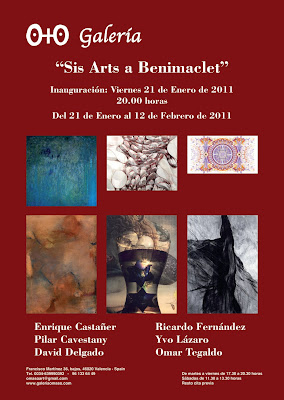
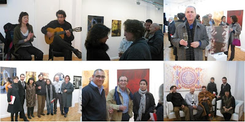
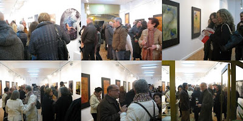

"Sis Arts a Benimaclet": Inauguración Viernes 21 de Enero de 2011
miércoles, 19 de enero de 2011
{kind=link}

"SIS ARTS A BENIMACLET"
Del 21 de enero al 12 de febrero 2011
Inauguración 21 de enero a las 20:00 horas
La Galería O+O de Valencia tiene el placer de presentar la exposición colectiva “SIS ARTS A BENIMACLET” formada por los artistas: David Delgado, Ivo Lázaro, Ricardo Fernández, Pilar Cavestany, Omar Tegaldo y Enrique Castañer. Una muestra multidisciplinar en la que contamos con la pintura abstracta y matérica de David Delgado, una serie de fotografías mitológicas de Yvo Lázaro, Ricardo Fernández presenta sus impresiones sobre vinilo de la serie mándalas, Pilar Cavestany nos trae sus instalaciones escultóricas en cajas de metacrilato, los dibujos inquietantes y poéticos son realizados por Omar Tegaldo y Enrique Castañer vuelve a exponer sus pinturas para la Galería O+O después de su participación en la Shanghai Art Fair 2010, en la que también participó Pilar Cavestany.
{kind=link}

{kind=link}

David Delgado (Madrid, 1975) cuenta con más de 30 exposiciones realizadas en ciudades como Madrid, Barcelona y Nueva York. Una larga trayectoria que ha servido para dotar a sus obras de un lenguaje único y personal. Las diferentes formas, abstractas y nebulosas surgidas del trabajo artístico de David Delgado apresan la tosquedad de las texturas térreas, dejando intuir el contenido simbólico del paisaje. En este cautiverio de lo matérico sus pinturas sufren una proyección expresionista, donde los contrastes y superposiciones cromáticas son los canales utilizados por los sentimientos y emociones. Texturas fosilizadas fruto de ideas preconcebidas que juegan con el subconsciente. Un viaje por un universo natural que flota sobre agua, hielo, humo… proyectando una solidez y energía llena de libertad.
Doctor en Bellas Artes e investigador cromático Yvo Lázaro, entra en contacto con la Pintura antes de descubrir el mundo de la Fotografía. La Pintura junto a otra de sus pasiones, la Música, se verán reflejadas en la mirada personal de su obra fotográfica. Sus instantáneas han sido expuestas en distintas galerías y ferias de arte de Madrid, Nueva York, Austria, Italia, Bélgica, entre otras. También ha sido becado en talleres de gran importancia como el de Ouka Leele. Las fotografías de Yvo Lázaro nos revelan su capacidad para reinventar la realidad a través de la imaginación. Mitología y simbolismo dialogan con lo real formando un universo que es espiado por el observador. Una invitación para disfrutar de miradas amorosas, cómplices señales o luces y sombras misteriosas. Imágenes guiadas por las musas que se transforman en una poesía visual continua; un lenguaje sin palabras que nos desafía a través de la belleza.
Ricardo Fernández nacido en 1963 Caracas (Venezuela), vive entre Madrid, León y Salamanca antes de afincarse en Palma de Mallorca. La obra plástica de este arquitecto forma parte de colecciones como la de la Galería Dimaca y Edición Limitada, ambas con sede en Caracas; Galería Arte Casa de Puerto de Andratx (Mallorca); y Galería O+O de Valencia, con la que ha participado recientemente en la Feria Estampa 2010 de Madrid. Su obra ha recibido la distinción de "Obra destacada" en el reciente "Premi d' Art digital Jaume Graell 2010” auspiciado por el Ayuntamiento de Igualada (Barcelona). En su obra podemos ver como desarrolla la idea de las Mándalas, diagramas esquemáticos y simbólicos del macrocosmos y el microcosmos. Se trata de un trabajo muy orientalista influjo del budismo y el hinduismo. Estas representaciones esquemáticas guardan en su interior una relación directa con el urbanismo y la arquitectura. Líneas y caminos que se entrelazan siguiendo las direcciones adecuadas hasta crear un conjunto de color y delicadeza.
La artista Pilar Cavestany (1961, Madrid) presenta sus características esculturas compuestas por cajas de metacrilato que encierran en su interior composiciones realizadas con cinta de negativo de cine y fotografía. El resultado son laberintos de formas serpenteantes llenas de movimientos y múltiples perspectivas. Las diferentes gamas cromáticas de estos negativos apresados se mezclan de forma ondulada creando figuras de gran belleza, en las que el espacio circundante pasa a formar parte de ellas. A la película de 35mm en ocasiones le acompañan serigrafías o neones que dotan a las esculturas de una óptica diferente .a modo de instalaciones. Piezas mudables y etéreas que se presentan ante nosotros con un sutil y vaporoso juego de vacíos. Pilar Casvestany ha participado en importantes ferias de arte como Scope Art Fair Basel, Pool Art Fair Nueva York, Affordable Art Fair Londres, Estampa Madrid, Shanghai Art Fair, entre otras.
Los dibujos de Omar Tegaldo ( Buenos Aires ),nos muestran sin tapujos sus raíces orientales. El influjo de la pintura y caligrafía oriental guían la mano del artista al realizar sus composiciones sobre papel. Un trabajo artístico caracterizado por la espontaneidad, dedicación y estudio. Dibujos monocromos que muestran el barrido de los pigmentos creando una suerte de formas fantasmales; que hacen hincapié en su carácter poético y simbólico. Sombras y espectros, llenos de ligereza y elegancia, transformados en personajes enigmáticos e inquietantes que nos atraen con un magnetismo turbador. Omar Tegaldo, profesor titular de Arte Asiático,de la facultad de arte y ciencias de la Universidad Museo Social de Buenos Aires ha impartido cursos de pintura y caligrafía china en la Universidad Politécnica de Valencia, Estudios Orientales de Universidad de Alicante, y en la Galería O+O .Profesor titular de arte chino y sociedad de Estudios Orientales de la Universidad del Salvador, Buenos Aires, Argentina.
Profesor del Instituto Confucio, Facultad de Filologia de Valencia.Ha expuesto su obra en ciudades como Valencia, Roma, Buenos Aires, Miami (,EEUU)New York, Taipei (China).
Enrique Castañer estudió Bellas Artes en su Valencia natal, aunque vive en Murcia. Ha expuesto su obra de forma individual y colectiva en ciudades como Madrid, Barcelona, Valencia, Murcia, París, Monza, Shanghai, Nueva York, entre otras muchas. Sus pinturas son fruto de un ejercicio de abstracción de la realidad fundamentado en la luz. Composiciones equilibradas y llenas de sutileza, que hacen un llamamiento a lo sentidos del espectador con sus pinceladas rebosantes de plasticidad. Dejando la trama abstracta en el bajo fondo estructural. Una experiencia iluminada por la energía delicada y la belleza de sus pinceladas sin límites ni fronteras. Un breve instante en el que las sombras dejan paso a la luz, justo antes de volver a desaparecer.
Óscar García García.